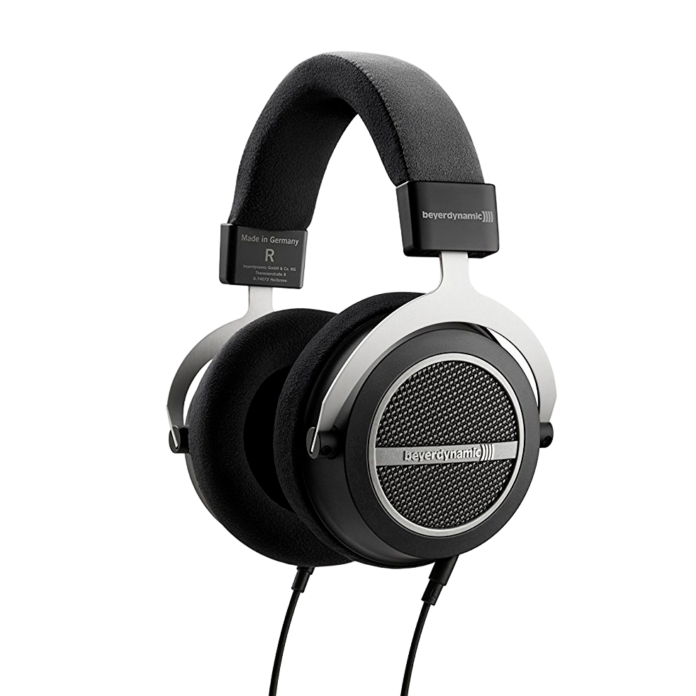

| Наименование | Цена, Руб. |
|---|---|
| Наушники | 12000 |
Bererdynamic Amiron Wireless
Какой жанр музыки вы би не предпочитали, будь то ритмичный ньюскул рэп или тяжелый рок — в этих наушниках любая музыка зазвучит одинаково качественно и многогранно. Как и у гаджетов на позициях выше, в гарнитурах Bose предусмотрена функция шумоподавления. Полезным функциональным дополнением станет возможность как беспроводного, так проводного подключений (через порт 3.5 mm).